This homework builds a path tracer, and the arc of it is that each part removes an approximation the previous part was relying on. Part 1 gets rays out of the camera and tests them against triangles and spheres, which is enough to shade by surface normal and nothing more. Part 2 replaces the linear scan over every primitive with a bounding volume hierarchy, which is what makes anything larger than a teapot renderable at all. Part 3 adds real lighting, and does it twice, once by guessing directions over the hemisphere and once by sampling the lights directly. Part 4 lets light bounce more than once. Part 5 stops throwing samples at pixels that have already converged.
The thing I found most interesting is how differently the two halves fail. The geometry in
Parts 1 and 2 either works or produces something obviously broken, so you can debug from the
picture. The Monte Carlo code in Parts 3 to 5 fails quietly. A missing 1/pdf, a
cosine term in the wrong frame, or a Russian roulette weight applied to the wrong bounce all
produce an image that looks like a plausible render of a slightly different scene. Nothing
crashes and nothing looks wrong until you put two images side by side. Most of my debugging
in Part 4 came down to rendering the same scene twice with one factor changed and comparing.
All images on this page were produced with the -f flag at 480×360 with 16
threads. Render times quoted throughout are from the same machine (16 cores), so they are
comparable to each other even though they are not comparable to the reference numbers in the
spec.
A pixel's colour starts as a question about radiance arriving at the camera, and the pipeline
answers it by working backwards. raytrace_pixel is handed integer pixel
coordinates and decides where inside that pixel to sample. For a single sample it takes the
centre; otherwise it asks gridSampler for a random offset in \([0,1)^2\) and adds
it to the pixel's bottom-left corner. That point is still measured in pixels, so it gets
divided by the image width and height before being handed to the camera, which expects
normalised coordinates.
generate_ray turns that pair of numbers into a world-space ray. In camera space
the eye sits at the origin looking down \(-Z\), with a virtual sensor one unit away on the
plane \(z = -1\). The sensor's half-extents come from the field of view:
The \((2x-1)\) term is the interpolation written compactly: it sends \(0\) to the left edge,
\(1\) to the right edge and \(0.5\) to the centre. Because the eye is at the origin, that
sensor point is also the direction vector, so the only remaining work is rotating it into
world space with c2w and normalising. c2w is a \(3 \times 3\)
rotation, so the camera position is used for the ray's origin and never added to its
direction. The ray's min_t and max_t are then set to the near and
far clip distances, which the constructor does not do for you.
Two things here are worth stating because getting either wrong still produces a picture.
hFov and vFov are stored in degrees while tan expects
radians, so skipping the conversion gives a wrong but entirely plausible field of view. And
if the direction is left unnormalised, \(t\) stops being a distance, which quietly breaks
every min_t and max_t comparison downstream.
Each generated ray goes to est_radiance_global_illumination, which asks the BVH
for the nearest intersection and shades it. At this stage of the assignment that shading is
just the surface normal remapped into the unit colour cube, which is what the images below
show. raytrace_pixel averages the returned radiance over all samples for the
pixel and writes the result to the sample buffer.
I used the Möller–Trumbore test. The idea is to write the intersection as a single system of equations instead of intersecting the plane first and then checking whether the point landed inside the triangle. A point on the ray is \(\mathbf{o} + t\mathbf{d}\), and a point in the triangle is a barycentric combination of its vertices, so setting them equal gives
\[ \mathbf{o} + t\mathbf{d} = (1 - b_1 - b_2)\mathbf{p}_1 + b_1\mathbf{p}_2 + b_2\mathbf{p}_3 \]That is three scalar equations in three unknowns \((t, b_1, b_2)\), and Cramer's rule solves it. Rearranged into matrix form, every determinant that appears turns out to be a scalar triple product of the two edge vectors \(\mathbf{e}_1 = \mathbf{p}_2 - \mathbf{p}_1\), \(\mathbf{e}_2 = \mathbf{p}_3 - \mathbf{p}_1\) and the vector from \(\mathbf{p}_1\) to the ray origin, which is why the implementation is a handful of cross and dot products with no explicit matrix anywhere.
What makes it worth using is that the barycentric coordinates fall out of the same
computation that produces \(t\). The inside-outside test is then free: the point is inside
when \(b_1 \geq 0\), \(b_2 \geq 0\) and \(b_1 + b_2 \leq 1\), that last condition standing in
for the third weight \(1 - b_1 - b_2\) being non-negative. I ordered the checks so the cheap
rejections happen first. The determinant is tested against EPS_D before anything
else, since a near-zero value means the ray runs parallel to the triangle's plane and there is
no unique solution. Then \(b_1\), then \(b_2\), and only if all of those pass is \(t\)
computed and compared against the ray's current \([t_{\min}, t_{\max}]\) window.
On a hit, the same barycentric weights interpolate the three vertex normals, which is what
lets a coarse mesh shade smoothly. The last line of intersect writes
r.max_t = t, and this is the piece that makes nearest-hit work: every primitive
tested afterwards now rejects anything further away without any comparison logic in the
caller. The field is declared mutable precisely so a const Ray&
can be narrowed this way. has_intersection shares the same helper and stops
after the boolean, since it has no intersection record to fill in.
The sphere test is the quadratic formula applied to \(|\mathbf{o} + t\mathbf{d} -
\mathbf{c}|^2 = r^2\). The part that needed care was root selection. Taking the smaller root
is wrong when the ray starts inside the sphere, and taking the first root above
min_t is wrong when a nearer surface has already tightened
max_t. The implementation falls through from \(t_1\) to \(t_2\) and checks both
ends of the window each time.
Normal shading on four small scenes, one sample per pixel:
|
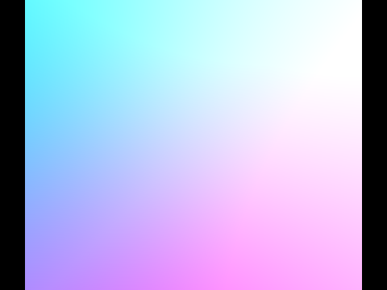 simple/cube.dae, 12 primitives. The flat faces make the
normal-to-colour mapping easy to read: each face is a single constant colour. |
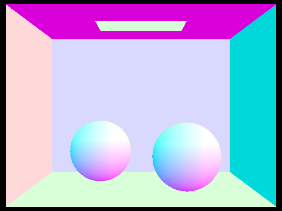 sky/CBspheres.dae, 14 primitives. The two spheres are
analytic rather than meshed, so their normals are smooth at any resolution. |
|
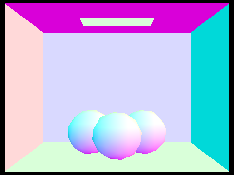 sky/CBgems.dae, 252 primitives. Faceted geometry, so
neighbouring triangles jump between colours at every edge. |
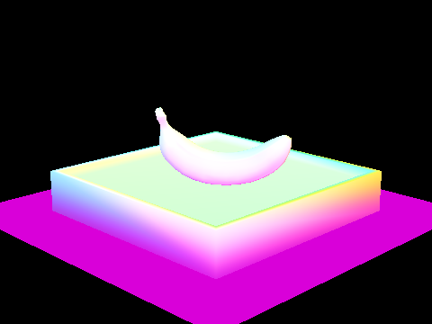 keenan/banana.dae, 2458 primitives. Interpolated vertex
normals, which is why the shading across the curved surface is continuous. |
construct_bvh is recursive and takes a range of iterators into one shared
primitive vector. It first grows a bounding box over everything in the range and allocates a
node for it. If the range holds no more than max_leaf_size primitives, that node
keeps the iterators as its start and end and is returned as a leaf,
with both child pointers left null. Leaves store a range rather than a copy, which matters
because the partition step reorders the shared vector in place and the ranges of sibling
leaves are therefore guaranteed not to overlap.
For an interior node I pick the axis where the node's bounding box is longest, using
bbox.extent. Splitting the long axis keeps the two child boxes closer to cubic,
and compact child boxes are what makes traversal cheap, since a ray is more likely to miss a
box that does not sprawl.
For the split point I used the average of the primitive centroids along that axis rather than the geometric midpoint of the box. Both are suggested in the spec and both cost one linear pass. The centroid average behaves better when geometry is unevenly distributed: the midpoint of the box is a property of the two most extreme primitives and ignores where the bulk of the geometry actually sits, so a single distant triangle can drag the split plane into empty space and produce a badly lopsided tree. The centroid average is pulled towards wherever the primitives are dense.
std::partition then reorders the range against that value and hands back the
boundary iterator, and the two halves recurse. The one case that needs guarding is a
partition where every centroid lands on the same side, which happens with coincident
centroids and is common in axis-aligned geometry. The child range would then be identical to
its parent and the recursion would never terminate. This shows up as a segfault from stack
exhaustion with no error message attached, so it is worth handling deliberately rather than
discovering. When the partition comes back empty on either side I fall back to splitting the
range down the middle by count, which always makes progress.
Lecture 9 develops the surface area heuristic and its bucketed approximation, which chooses the split by minimising an expected traversal cost instead of using a positional rule. I did not implement it. The centroid average is one of the two heuristics the spec suggests, and the measurements below show it already recovers most of the available speedup, though an SAH-built tree would be expected to do better again on scenes with large empty regions.
Both traversal functions start by testing the ray against the node's bounding box and
returning immediately on a miss, which is the entire point of the structure. The box test
takes copies of ray.min_t and ray.max_t rather than the fields
themselves, because BBox::intersect writes through those parameters. Since both
fields are mutable, passing them directly compiles without complaint and then
silently overwrites the ray's valid range with one box's entry and exit times, which breaks
every test afterwards.
The two functions differ in how they combine results. has_intersection can
return true the moment anything is hit, because no later primitive can change a
yes into a no. intersect has to visit every primitive in every box the ray
enters, since a later one may be nearer, so the results are accumulated rather than
short-circuited. The accumulation is written
hit = (*p)->intersect(ray, i) || hit; with the call on the left on purpose:
reversing the operands lets || skip the call once something has been hit, which
still returns a hit, just not always the nearest one.
There is no extra bookkeeping in the BVH code itself. The primitive's own
intersect already fills the intersection record and tightens
r.max_t, and that tightening is what prunes later subtrees automatically: by the
time the right child is visited, the ray's range may already be short enough that the right
child's box test fails outright.
Four scenes that are impractical without the hierarchy. All four render in well under a tenth of a second with it:
|
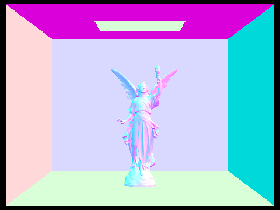 sky/CBlucy.dae, 133,796 primitives. BVH built in 0.155 s,
rendered in 0.035 s, averaging 16.0 intersection tests per ray. |
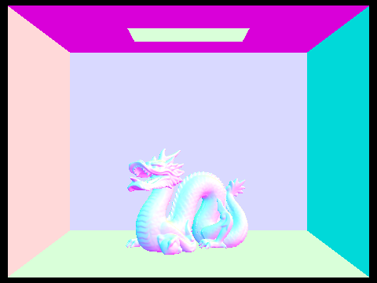 sky/CBdragon.dae, 100,012 primitives. Built in 0.111 s,
rendered in 0.041 s, 16.5 tests per ray. |
|
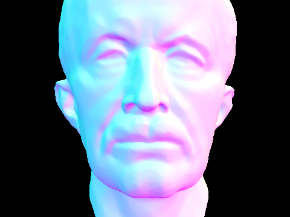 meshedit/maxplanck.dae, 50,801 primitives. Built in
0.049 s, rendered in 0.038 s, 13.1 tests per ray. |
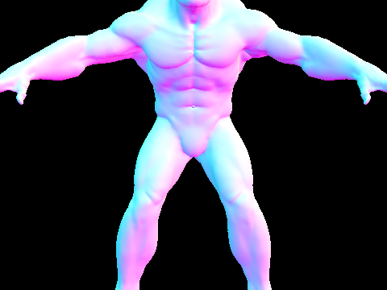 meshedit/beast.dae, 64,618 primitives. Built in 0.060 s,
rendered in 0.024 s, 8.8 tests per ray. |
To measure the hierarchy's effect in isolation I checked out my Part 1 commit, which still had the starter's linear scan over every primitive, and rendered the same four scenes with identical settings. Everything else in the renderer was unchanged, so the only difference is the traversal. All runs are normal shading, one sample per pixel, 480×360, 16 threads.
| Scene | Primitives | No BVH | With BVH | Speedup | Tests/ray, no BVH | Tests/ray, BVH | Reduction | BVH build |
|---|---|---|---|---|---|---|---|---|
teapot.dae | 2,464 | 5.573 s | 0.0188 s | 296× | 2464.00 | 8.19 | 301× | 0.0015 s |
cow.dae | 5,856 | 13.196 s | 0.0260 s | 508× | 5856.00 | 17.47 | 335× | 0.0042 s |
beetle.dae | 7,558 | 17.410 s | 0.0212 s | 821× | 7558.00 | 9.82 | 770× | 0.0057 s |
CBcoil.dae | 7,884 | 18.179 s | 0.0317 s | 573× | 7884.00 | 21.73 | 363× | 0.0067 s |
A note on how the last three columns were measured, because my first attempt produced
nonsense. The renderer's own counters, total_rays and total_isects
in bvh.h, are plain unsigned long long incremented from every
worker thread with no synchronisation. Running 16 threads, the linear version reported
around 342 tests per ray on the cow, which cannot be right, since a scan that tests every
primitive has to report 5,856. The counts were being lost to a data race, and consistently
so: every scene came back at roughly a seventeenth of its true value with 16 threads. Rerun
with -t 1 the same builds report exactly 2464.000, 5856.000, 7558.000 and
7884.000, and a ray count of exactly 19,200 for a 160×120 image. The test counts above
are therefore single-threaded, while the timings are the 16-thread figures, since wall clock
is what the hierarchy is for.
With that fixed the numbers tell a clean story. Without the hierarchy the tests per ray are the primitive count, exactly, which is what a linear scan is. With it, the same figure falls to between 8 and 22 and stops tracking the scene size: the beetle has three times the geometry of the teapot and needs only 20% more tests per ray. The cost of a ray has moved from scaling with the number of primitives to scaling with the depth of the tree, so the reduction grows with the scene, from 301× on the teapot to 770× on the beetle. Those reductions line up closely with the measured speedups of 296× and 821×, which is the result I would hope for: almost all of the time saved is explained by intersection tests that no longer happen, rather than by some secondary effect.
The two scenes where the match is loosest are the cow and the coil, where the time saved
exceeds the test reduction by around 50%. Both have the highest tests-per-ray of the four
under the BVH, which suggests their trees are the least well separated, and in those cases
the surviving tests are concentrated in leaves whose primitives std::partition
has left contiguous in memory. The linear version, by contrast, walks the entire pointer
array for every ray regardless.
Build time is negligible against all of this. The most expensive tree here took 6.7 ms to construct and saved over 18 seconds on a single frame, and since the tree is built once per scene and reused for every ray of every sample, the ratio only improves at realistic sample counts. The largest scene I rendered, Lucy at 133,796 primitives, took 0.152 s to build, and the linear version would not have finished a frame of it in any reasonable time.
Both estimators compute the same integral, the reflection equation restricted to light arriving directly from an emitter:
\[ L_o(p,\omega_o) = \int_{H^2} f_r(p, \omega_i \to \omega_o)\, L_i(p, \omega_i)\, \cos\theta_i \; d\omega_i \]
The hemisphere version estimates it the obvious way. It draws \(N\) directions uniformly over
the hemisphere above the hit point, where \(N\) is the number of lights times
ns_area_light, and averages the integrand divided by the sampling density. For a
uniform hemisphere that density is the constant \(1/(2\pi)\), so dividing by it is the same as
multiplying by \(2\pi\):
The sampler returns directions in a local frame where \(+Z\) is the surface normal, which is
convenient twice over. The cosine term is just the \(z\) component of the sampled direction,
and the BSDF expects both of its arguments in that same frame, which is the frame
w_out arrives in. The direction has to be rotated into world space by
o2w before a shadow ray can be built from it, since the scene and the BVH live in
world coordinates.
Each sample traces a ray from the hit point in the sampled direction and asks what it hits. The incoming radiance is whatever that surface emits, which is zero for anything non-emissive, and zero is the correct contribution: a ray that lands on a wall has found no direct light. Rays that hit nothing contribute nothing either. The average is taken over all \(N\) samples rather than over the subset that found a light, because dividing by the hit count would bias the estimate upward.
The detail that costs the most time if missed is shadow.min_t = EPS_F. Without
it the shadow ray starts exactly on the surface it is leaving and immediately intersects it,
so every sample reports itself as occluded and the whole image renders black.
The hemisphere estimator wastes most of its work. In a Cornell box the light subtends a tiny solid angle, so the overwhelming majority of uniformly chosen directions hit a wall and contribute exactly zero. The average is then dominated by the few samples that did find the light, which is what produces the grain.
Importance sampling inverts the loop. Instead of choosing directions and checking whether
they reach a light, it iterates over the lights and asks each one for a direction towards
itself. sample_L returns the incoming radiance, a direction, the distance to the
light and the probability density of having chosen that direction, and because that density
is no longer constant it has to be divided out per sample. The returned direction is in world
space, unlike the hemisphere sampler's, so it gets rotated into the local frame by
w2o before being passed to the BSDF.
Three things differ from the hemisphere version. Samples whose local \(z\) component is
negative come from below the surface's horizon and are skipped before a ray is traced. The
occlusion test uses has_intersection rather than intersect, since
the question is only whether something blocks the path and the search can stop at the first
blocker. And the shadow ray's max_t is set to the distance to the light minus an
epsilon, which is what turns a nearest-hit query into an occlusion query: geometry beyond the
light is irrelevant, and the epsilon stops the light's own surface from counting as its own
occluder. Each light's samples are averaged over that light's own count and the results summed,
since a delta light needs only one sample while an area light needs
ns_area_light.
The same two scenes under both estimators, 64 samples per pixel and 32 light rays, direct lighting only:
|
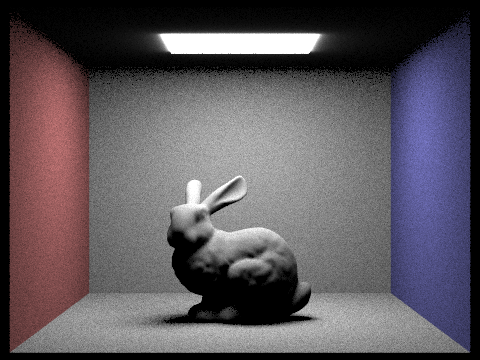 CBbunny.dae. 63.7 s. |
CBbunny.dae. 25.8 s. |
|
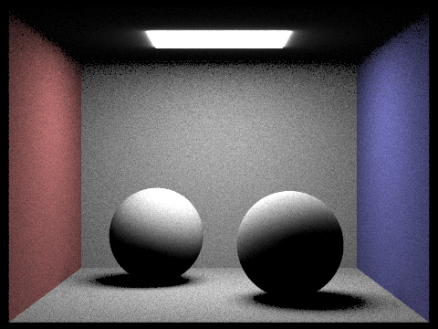 CBspheres_lambertian.dae. 56.4 s. |
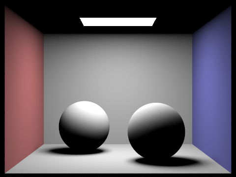 CBspheres_lambertian.dae. 27.8 s. |
CBbunny.dae at one sample per pixel with light sampling, varying only
-l. Isolating the light samples this way makes the convergence of the soft
shadow easy to follow:
|
|
|
|
|
|
At one light ray every pixel is a single binary decision about whether it can see the light, so the penumbra under the bunny degenerates into scattered black and white speckle with no intermediate values at all. By four rays a pixel can report a fraction, and the shadow becomes recognisable while still noisy. At sixteen the gradient across the penumbra is smooth and the remaining grain is mostly on the walls. At sixty-four the soft shadow is clean and the residual noise comes from the single pixel sample rather than from the light. The cost scales close to linearly with the ray count, 0.061 s to 1.502 s for a 64-fold increase, while the error falls as \(1/\sqrt{N}\).
At matched settings the light-sampled images are substantially cleaner, and the difference is concentrated exactly where it matters. The hemisphere renders are grainy across every indirect surface and worst in the shadowed regions, because those are the points from which the light subtends the smallest solid angle and therefore the fewest random directions reach it. The light-sampled renders have smooth walls and clean penumbrae at the same 64 samples per pixel.
The hemisphere version is also slower, taking 63.7 s against 25.8 s on the bunny for a
noisier result, which was not what I expected from two estimators drawing the same number of
samples. The reason is the kind of query each one issues. The hemisphere estimator calls
bvh->intersect, a nearest-hit query that has to descend into every box the ray
enters because a closer primitive may still turn up. The importance estimator calls
bvh->has_intersection, which returns as soon as it finds any blocker and in an
unoccluded scene usually finds none quickly. Light sampling therefore wins twice, with lower
variance per sample and cheaper samples.
One difference between the two images is not noise. The glow immediately around the light source visible in the hemisphere renders is absent under light sampling, which the assignment notes is expected: the area lights carry a directional emission profile that the light sampler accounts for and uniform hemisphere sampling does not model.
Hemisphere sampling does have one structural advantage, which is that it needs no explicit list of lights. It finds emissive geometry by running into it, so it would handle an emissive surface that was never registered as a light. That is the trade: light sampling needs to be told where the lights are, and in exchange it never wastes a sample.
at_least_one_bounce_radiance is where the recursion lives. It returns the direct
light at the current hit plus an estimate of everything arriving there indirectly, and it
gets the second term by calling itself.
The direct term is just one_bounce_radiance at this hit. For the indirect term
the function asks the BSDF for an outgoing direction with sample_f, which returns
the direction, its probability density and the BSDF value in one call. For a diffuse surface
that sampler is cosine-weighted rather than uniform, which is worth doing because the
estimator multiplies by \(\cos\theta\) anyway: sampling in proportion to a factor that is
about to be applied cancels it out and removes that source of variance. A new ray is built
from the hit point along the sampled direction with depth = r.depth - 1, and the
result of recursing on whatever it hits is weighted by
Decrementing the depth is what terminates the recursion. The rays are traced backwards from the camera, which is why the function samples \(\omega_i\) and leaves \(\omega_o\) fixed: at every hit the outgoing direction is already known, since it is where the previous ray came from.
isAccumBounces decides what gets returned. When it is true the indirect estimate
is added to the direct term, so the result is the sum over every bounce up to the depth
limit. When it is false the direct term is discarded and only the indirect estimate is
returned, which means each level passes the deeper result up untouched and what comes out is
the contribution of the deepest bounce alone.
Terminating paths at a fixed depth is a bias: light really does bounce more than five times, and cutting it off throws that energy away. Russian roulette removes the fixed limit without introducing bias. Each path is killed with probability \(1 - p\), and the paths that survive have their contribution divided by \(p\), which leaves the expected value unchanged while the average path gets much shorter.
I used a continuation probability of 0.65, within the 0.3 to 0.4 termination range the
assignment suggests. The roulette is skipped on the first indirect bounce, so every path that
has the depth budget for one bounce always takes it. Without that exception a low-depth
render loses most of its indirect light to termination before any of it is gathered. The
condition is r.depth < max_ray_depth, which works because camera rays are
created with depth = max_ray_depth, so it reads as "this is not the first hit".
The same flag gates the division. Dividing unconditionally would brighten the first bounce by \(1/0.65\); never dividing darkens everything after it. Both produce an image that looks like a believable render of a slightly different scene, which is why I checked it by rendering the same depth twice rather than by looking at one image.
Both scenes at 1024 samples per pixel, 4 light rays, maximum ray depth 5:
CBbunny.dae with direct and indirect illumination. 141.1 s. |
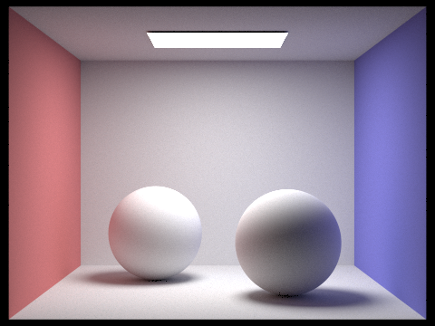 CBspheres_lambertian.dae with direct and indirect
illumination. 165.0 s. |
The same scene split into its two halves, both at 1024 samples per pixel. The direct image is
a depth-1 render. For the indirect image I edited
at_least_one_bounce_radiance to skip its direct term at the camera-visible hit
only, keeping it at every deeper level.
|
|
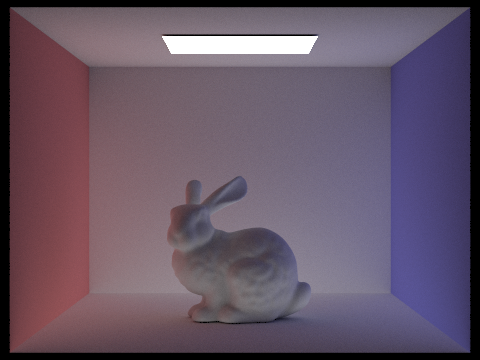 |
The two images are close to complementary. The direct render has hard, well-defined shading: the bunny is lit from above, the shadow beneath it is distinct, and the ceiling is completely black because the light faces downward and nothing can reach it in one bounce. The indirect render has no sharp shadow anywhere. Its light arrives from every direction at once, so the ceiling is lit, the shadow under the bunny is a soft darkening rather than an edge, and the colour of each wall has spread onto the surfaces facing it. That colour bleeding is the part that cannot be faked by adding an ambient constant, since it depends on what is actually next to a surface.
The indirect render took 254.1 s against 10.1 s for direct, which is the real cost of global illumination. It is also the slowest image on this page, slower than the full render at the same depth, because adaptive sampling converges more slowly on a dim image: the stopping rule is relative to the pixel mean, so a dark pixel has to reach a much tighter absolute tolerance before it is allowed to stop.
CBbunny.dae with isAccumBounces=false, so each image is the
contribution of that bounce alone, at 1024 samples per pixel:
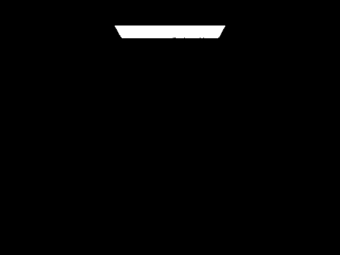 |
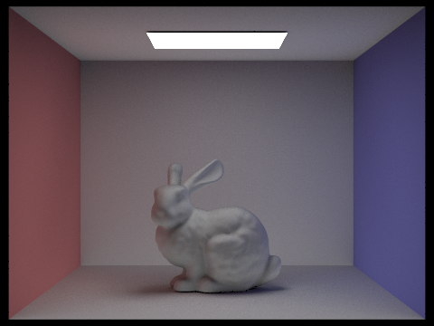 |
|
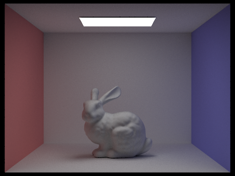 |
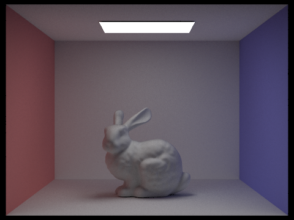 |
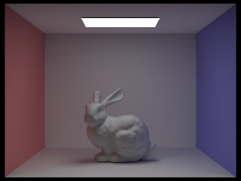 |
At \(m = 0\) only light that reaches the camera without scattering is drawn, which is the emitter itself on an otherwise black frame. At \(m = 1\) the scene appears as direct lighting, with the hard shadow and the unlit ceiling described above.
The second bounce is the one that changes the character of the image. It is the first light to have touched a surface and picked up its colour, so it is what lights the ceiling, fills the shadow under the bunny and tints the floor near each wall. Everything a rasteriser approximates with an ambient term is in this image, except that here it is directional and coloured by its surroundings rather than constant. The third bounce adds considerably less: it is dimmer, softer, and mostly smooths out what the second bounce already established.
The reason this matters against rasterisation is that a rasteriser has no mechanism for either of these images. It can compute the \(m = 1\) picture, since that only requires knowing where the light is, and a shadow map gets the occlusion. It cannot compute \(m = 2\), because answering "what colour light arrives here from the rest of the room" requires visibility queries from every surface to every other surface, which is the thing ray tracing does and rasterisation does not. The usual substitute is a constant ambient term, and comparing it to the \(m = 2\) image shows what that approximation throws away: the red and blue cast on the bunny's flanks, the soft gradient up the back wall, and the fact that the ceiling is lit at all.
Successive bounces fall off steadily. Measuring the mean pixel value of each image, the isolated bounces go 92.3, 88.9, 87.2 and 86.5 for \(m = 2\) through \(5\), so each one contributes less than the one before as energy is absorbed at every reflection. By the fifth bounce the change is small enough to be hard to see without comparing numbers.
Same depths, with isAccumBounces=true so each image sums every bounce up to \(m\):
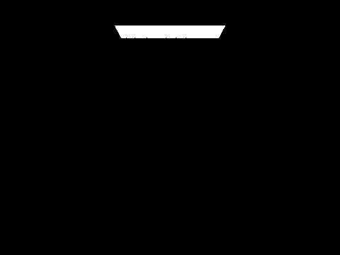 |
||
The accumulated series converges visibly: each image is brighter than the last and the increments shrink, with the step from \(m = 4\) to \(m = 5\) barely perceptible. Mean pixel value for the accumulated \(m = 5\) image is 144.8 against 86.5 for the isolated fifth bounce, which is the difference between summing the series and sampling one term of it.
The unaccumulated renders are consistently slower than the accumulated ones at the same
depth, 341.0 s against 141.1 s at \(m = 5\), and the reason is adaptive sampling rather than
the path tracing. An isolated bounce is a dim image, and the stopping rule compares a
confidence interval against maxTolerance times the pixel mean. A smaller mean
means a tighter absolute target, so those pixels keep drawing samples long after the
equivalent pixel in the brighter accumulated image has stopped.
Russian roulette is always active in my implementation, so the depths below are the same renders as the accumulated series above, with \(m = 100\) added:
The \(m = 100\) image is the point of the technique. It is visually indistinguishable from \(m = 5\), because the light has essentially converged by then and the remaining bounces contribute less than the noise floor, and it took 157.5 s against 141.1 s for \(m = 5\), an 11% increase for a twentyfold increase in the depth limit. Without roulette that render would trace every path to 100 bounces and would not finish in any comparable time. The cost grows with the expected path length, which the roulette has capped at roughly \(1/(1-0.65) \approx 3\) bounces beyond the first, rather than with the limit itself.
CBbunny.dae at depth 5 with 4 light rays, varying only -s:
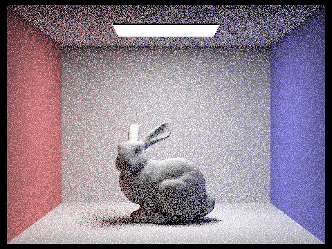 |
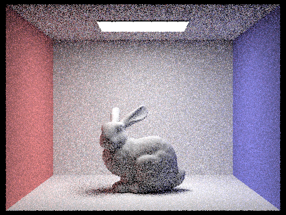 |
|
The cost is linear in the sample count up to 64, doubling almost exactly with each step from 0.37 s to 22.66 s, while the noise falls as \(1/\sqrt{N}\). That mismatch is the whole difficulty of path tracing: halving the visible noise costs four times the work. The jump from 64 to 1024 is a sixteenfold increase in samples for only a sixfold increase in time, which is adaptive sampling beginning to pay off, since at high sample counts most pixels hit the tolerance and stop early.
Every image in Part 4 was rendered with the same number of samples in every pixel, chosen so that the noisiest part of the frame looked acceptable. That number is wasted almost everywhere else. A flat, evenly lit patch of wall converges after a few dozen samples and then spends the remaining thousand confirming an answer it already had, while the contact shadow under the bunny is still visibly noisy at the end. Adaptive sampling measures how converged each pixel is and stops that pixel early once it is good enough, spending the budget where it changes the picture.
"Good enough" is a statistical statement about the pixel's own samples. Treating the per-sample radiance as draws from a distribution with mean \(\mu\) and variance \(\sigma^2\), the sample mean after \(n\) draws has standard error \(\sigma/\sqrt{n}\), and
\[ I = \frac{1.96\,\sigma}{\sqrt{n}} \]is the half-width of a 95% confidence interval around it. The pixel is declared converged when \(I \leq \texttt{maxTolerance} \cdot \mu\), which at the default tolerance of 0.05 reads as being 95% confident the true mean is within 5% of the current estimate. Making the threshold relative to \(\mu\) rather than absolute is what stops the test from being unfair to dark pixels, which need a proportionally tighter absolute error to look equally clean.
The loop in raytrace_pixel became a while over a counter that
tracks how many samples were actually taken, with ns_aa demoted from a fixed
count to an upper bound. Alongside the running radiance sum it maintains two scalars,
from which the mean and variance come out in closed form,
\[ \mu = \frac{s_1}{n}, \qquad \sigma^2 = \frac{1}{n-1}\left(s_2 - \frac{s_1^2}{n}\right) \]
so no samples have to be stored. Here \(x_k\) is the scalar illuminance of the sample from
Vector3D::illum() rather than the RGB vector, because convergence has to be one
decision for the pixel and not three independent ones per channel. The \(n-1\) denominator is
Bessel's correction, and using \(n\) instead underestimates the variance, which declares
convergence too early and leaves exactly the residual noise the technique is meant to
remove.
The test runs every samplesPerBatch samples, 32 by default, rather than after
every sample. Checking per sample is equally correct and costs more in arithmetic than it
saves in traced rays. It also keeps \(n-1\) away from zero, since the test can never fire at
\(n = 1\) for any batch size above one. At the end the accumulated radiance is divided by the
number of samples actually taken rather than by ns_aa, and that same count is
written to sampleCountBuffer, which is what produces the rate images below.
Dividing by ns_aa here darkens precisely the pixels that stopped early, which is
a distinctive blotchy failure concentrated in the flat bright regions.
Both scenes at 2048 samples per pixel maximum, 1 sample per light, maximum ray depth 5, with a batch size of 32 and a tolerance of 0.05. In the rate images blue is few samples and red is the 2048 cap.
CBbunny.dae, noise-free result. 102.3 s. |
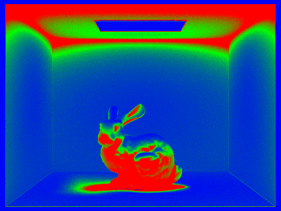 CBbunny.dae, sampling rate. |
CBspheres_lambertian.dae, noise-free result. 113.1 s. |
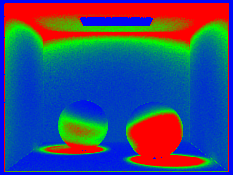 CBspheres_lambertian.dae, sampling rate. |
The rate images track the geometry closely enough to read as a description of the scene. The large flat walls are deep blue, converging almost immediately because they are evenly lit and nearly every sample agrees. The bunny is red across its whole surface and so are the contact shadows beneath both spheres, since those surfaces are lit mostly by indirect light arriving from many directions and successive samples disagree far more. The ceiling is the clearest case: it is red in a band around the light fixture, because it receives no direct light at all and everything reaching it has bounced at least once.
The light panel itself is blue, which took me a moment to see as correct. Its radiance comes
from zero_bounce_radiance, which is the emitter's constant emission with no
sampling involved, so the variance across samples is zero and the test passes on the first
batch. The brightest region in the image is one of the cheapest.
To put a number on the saving I re-rendered the bunny at the same settings with the tolerance set to zero, which disables early termination and makes every pixel run the full 2048 samples. That took 321.9 s against 102.3 s with adaptive sampling enabled, so the adaptive render is 3.1 times faster and does 68% less work.
The two images are not quite identical, and it is worth being precise about how close they are rather than asserting they match. Comparing them pixel by pixel, the mean absolute difference is 1.53 out of 255, around 0.6%, and only 0.19% of pixels differ by more than 8 levels in any channel. The largest single-channel difference anywhere is 65, in the noisiest part of the contact shadow. At normal viewing size I cannot pick them apart, which is the result the tolerance was asking for: being 95% confident of landing within 5% of the true mean leaves a small residual error by design, and that error is concentrated exactly where the rate image is red.
The saving comes entirely from the blue regions, so it depends on the scene. A render dominated by flat, well-lit surfaces would save more, and one lit almost entirely indirectly would save less, since adaptive sampling can only skip work that was not needed.